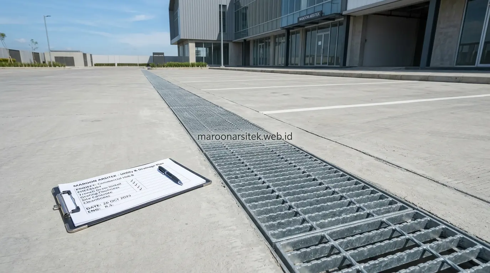

Pembangunan ruko modern minimalis di lahan strategis memerlukan analisis orientasi bangunan terhadap visibilitas jalan, perencanaan sistem utilitas dan drainase yang memadai, serta antisipasi kebutuhan ekspansi di masa mendatang agar nilai investasi properti tetap optimal jangka panjang. Maroon Arsitek merancang strategi pembangunan ruko yang mempertimbangkan ketiga aspek ini secara menyeluruh melalui layanan jasa kontraktor ruko dan kantor di seluruh wilayah Jabodetabek.
Banyak proyek ruko hanya berfokus pada desain fasad dan jumlah lantai, tanpa mempertimbangkan aspek teknis dan strategis yang memengaruhi nilai jual jangka panjang properti komersial tersebut. Bersama tim kontraktor gedung bertingkat yang berpengalaman, bagian berikut menguraikan strategi perencanaan yang menjawab kebutuhan daya jual tinggi melalui pertimbangan orientasi, utilitas, dan fleksibilitas masa depan.
Analisis Orientasi Bangunan terhadap Visibilitas dari Jalan Utama
Analisis orientasi bangunan mempertimbangkan sudut pandang dari jalan utama, arah arus lalu lintas kendaraan, dan titik pandang pejalan kaki, untuk memastikan fasad ruko mendapatkan visibilitas maksimal bagi calon pelanggan yang melintas di sekitar lokasi. Orientasi yang tepat menjadi faktor penentu dalam memaksimalkan nilai sewa komersial pada lahan strategis.
Posisi pintu masuk utama dan area pemasangan *signage* dirancang mempertimbangkan arah pandang dominan dari lalu lintas kendaraan, memastikan identitas bisnis penyewa dapat terlihat jelas tanpa terhalang elemen lain di sekitar fasad bangunan saat dirancang oleh tim jasa arsitek komersial.
Analisis ini turut mempertimbangkan posisi bangunan di sekitar, seperti pepohonan atau tiang utilitas yang berpotensi menghalangi pandangan, sehingga desain fasad dapat disesuaikan untuk tetap menonjol meski terdapat elemen penghalang di lingkungan sekitar, baik pada bangunan baru maupun pada proyek renovasi bangunan komersial.
Penempatan Signage sesuai Arah Pandang Dominan Lalu Lintas
Kebutuhan visibilitas maksimal bagi penyewa ruko dijawab melalui penempatan area signage yang disesuaikan dengan arah pandang dominan lalu lintas kendaraan, memastikan identitas bisnis dapat terlihat jelas dari jarak dan sudut pandang yang paling umum dilalui calon pelanggan.
Penempatan yang tepat ini menjadi nilai tambah bagi calon penyewa, karena visibilitas signage yang optimal berkontribusi langsung terhadap potensi jumlah pelanggan yang mengenali dan mengunjungi bisnis yang beroperasi di ruko tersebut.
Perencanaan Sistem Utilitas dan Drainase untuk Bangunan Komersial
Sistem utilitas dan drainase bangunan komersial dirancang dengan kapasitas yang memadai untuk mengantisipasi kebutuhan berbagai jenis usaha, termasuk kapasitas air bersih, pembuangan limbah, dan sistem drainase yang mampu menangani volume air hujan pada area dengan permukaan keras yang luas. Perencanaan ini penting untuk mencegah masalah operasional di kemudian hari.
Sistem drainase dirancang mempertimbangkan luas area parkir dan atap bangunan yang cenderung memperbesar volume limpasan air hujan, memastikan sistem pembuangan mampu menangani kondisi hujan deras tanpa menyebabkan genangan di sekitar bangunan ruko maupun akses masuk pengunjung.
Kapasitas utilitas air dan daya listrik turut dirancang dengan mempertimbangkan variasi jenis usaha yang berpotensi menempati ruko, seperti kebutuhan daya dan instalasi *grease trap* yang lebih besar untuk ruko usaha F&B dan restoran dibanding kebutuhan usaha kantor atau retail pada umumnya.

Kapasitas Drainase untuk Area dengan Permukaan Keras Luas
Kebutuhan pencegahan genangan air dijawab melalui perencanaan kapasitas sistem drainase yang mempertimbangkan luas area permukaan keras seperti parkiran dan atap, yang secara signifikan meningkatkan volume limpasan air hujan dibanding lahan dengan permukaan alami.
Perencanaan ini mencegah masalah genangan yang dapat mengganggu operasional bisnis penyewa, terutama pada musim hujan dengan intensitas tinggi yang berpotensi menyebabkan gangguan aktivitas di sekitar area ruko.
Antisipasi Kebutuhan Ekspansi Ruko di Masa Mendatang
Antisipasi kebutuhan ekspansi mempertimbangkan kemungkinan penambahan lantai atau perluasan area di masa mendatang, melalui perencanaan struktur yang memungkinkan pengembangan tanpa memerlukan pembongkaran besar pada bangunan yang sudah berdiri. Antisipasi ini menjadi nilai tambah bagi investor yang memperhitungkan efisiensi estimasi biaya pembangunan jangka panjang.
Struktur pondasi dan kolom dirancang dengan kapasitas cadangan yang memungkinkan penambahan beban di masa mendatang, memberikan fleksibilitas bagi pemilik properti untuk mengembangkan bangunan sesuai kebutuhan tanpa mengorbankan keamanan struktural. Rekayasa ini dapat memadukan konstruksi struktur baja dan beton yang kokoh dan efisien.
Perencanaan tata ruang juga mempertimbangkan kemungkinan pembagian unit di masa mendatang, seperti penyekatan ruang menjadi beberapa unit sewa terpisah, memberikan fleksibilitas komersial tambahan bagi pemilik properti dalam jangka panjang.
Kapasitas Struktur Cadangan untuk Pengembangan di Masa Depan
Kebutuhan fleksibilitas jangka panjang dijawab melalui perencanaan struktur dengan kapasitas cadangan sejak awal, memungkinkan penambahan lantai atau perluasan bangunan di masa mendatang tanpa memerlukan perkuatan struktur besar-besaran yang memakan biaya tinggi.
Perencanaan kapasitas cadangan ini diintegrasikan ke dalam dokumen RAB pembangunan ruko sejak awal, karena biaya tambahan untuk memperkuat pondasi pada tahap awal jauh lebih murah dibanding biaya renovasi pembongkaran struktur yang dilakukan di kemudian hari. Simak berbagai contoh implementasinya di portofolio bangunan komersial Maroon Arsitek.